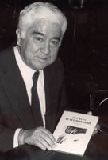

(1915 – 1995)

Aziz Nesin, sadece Türkiye'nin değil dünyanın en önde gelen gülmece yazarlarından biridir. Yazdığı kitaplar daha Türk edebiyatı dünyaya açılmadan önce birçok dilde yayımlanmış, yazara uluslararası bir ün ve bol sayıda ödül kazandırmıştır.
Türk edebiyatının en yaratıcı ve özgün kalemlerinden biri olan Aziz Nesin 20 Aralık 1915'te, İstanbul Heybeliada'da doğdu. 1925'te İstanbul Süleymaniye'de bulunan Kanuni Sultan Süleyman İptidai Mektebi'nin üçüncü sınıfına girdi. 1935'te Kuleli Askeri Lisesi'ni bitirip Harp Okulu'na geçti. 1937'de Ankara'da Harp Okulu'nu bitirip asteğmen oldu. II. Dünya Savaşı yıllarında iki yıl Trakya'da çadırlı ordugahta görev yapan Nesin 1942'de Erzurum Müstahkem Mevkii İstihkam Taburu Bölük Komutanlığı'na atandı. Bir bomba kazasında yaralandı. Erzincan'da depremde yıkılmış olan ordu cephaneliğinin boşaltılmasıyla görevlendirildi. Nesin 1944'te Ankara'da Harp Okulu'nda açılan ilk tank kursuna katıldı. 1944'te Zonguldak'ta uçaksavar top mevzileri yaptırmakla görevlendirildi.
Aziz Nesin, 1945'te askerlikten ayrıldıktan sonra Karagöz gazetesinde ve Yedigün dergisinde redaktörlük ve yazarlık yaptı; profesyonel olarak yazarlığa başladı. Aynı yıl Tan gazetesinde köşe yazarlığına başladı. Aynı yıl ilk bağımsız yapıtı olan Parti Kurmak Parti Vurmak adlı on altı sayfalık broşürü yayımlandı.
1946 yılında yazar Sabahattin Ali ile birlikte Marko Paşa ve devamı olan gülmece gazetelerini çıkaran Nesin, 1947'de Bursa'ya sürgün edilerek gözaltında tutuldu. 1948'de ikinci kitabı olan "Azizname" adlı taşlama kitabını çıkardı. Bu kitap için İstanbul 2. Ağır Ceza Mahkemesi'nde kendisine dava açıldı. Dört ay tutuklu olarak süren dava sonunda aklandı.
1952'de İstanbul'da yeni kurulmaya başlanan Levent'te bir dükkan kiralayarak Oluş Kitabevi'ni açan Nesin, sabahları Levent'teki evlere gazete dağıtıyordu. Ancak iki küçük çocuğuyla birlikte Levent'teki kitabevinden geçimini sağlayamayınca 1953'te, Beyoğlu'nda Bursa Sokağı'ndaki yeni yapılmış hanın bir odasında, "Paradi Fotoğraf Stüdyosu"nu bir ortağı ile birlikte kurdu. 1955'te Halil Lütfü Dördüncü'nün Yeni gazetesinde köşe yazarlığına başlayan Nesin 1956'da İtalya'da, Bordighera'da yapılan uluslararası gülmece yarışmasında birincilik ödülü olan Altın Palmiye'yi Kazan Töreni adlı öyküsüyle kazandı. Yazar 1957 yılında da aynı yarışmada, aynı ödülü Fil Hamdi adlı öyküsüyle ikinci kez kazandı. Kazandığı ilk Altın Palmiye'yi 1960 yılında devlet hazinesine bağışladı. Nesin 1961'de Tanin gazetesinde köşe yazarlığına başladı, aynı yıl Zübük adlı haftalık bir gülmece gazetesi çıkarmaya başladı. 1962'de sahibi bulunduğu Düşün Yayınevi, anlaşılamayan bir nedenle bir gece yandı.
Aziz Nesin 1966'da Bulgaristan'da yapılan bir başka uluslararası gülmece yarışmasında birincilik ödülü olan Altın Kirpi'yi Vatani Vazife adlı öyküsüyle kazandı. 1968'de Milliyet gazetesinin açtığı Karagöz oyunu yarışmasında Üç Karagöz oyunuyla birincilik ödülü aldı.
1969'da Moskova'da yapılan uluslararası gülmece yarışmasında İnsanlar Uyanıyor adlı öyküsüyle Krokodil birincilik ödülünü, 1970'te de Türk Dil Kurumu'nun oyun ödülünü "Çiçu" adlı tiyatro oyunuyla kazandı. 1972'de kimsesiz çocukları sahiplenmek ve onları meslek sahibi olana kadar yetiştirmek için Nesin Vakfı'nı kurdu. 1974'te Asya-Afrika Yazarlar Birliği'nin Lotus ödülünü kazanan Nesin, 1975 Lotus ödülünü almak için Filipinler'in başkenti Manila'da yapılan törene katıldı.
1977'de Türkiye Yazarlar Sendikası Başkanı seçilen Nesin 1978'de Yaşar Ne Yaşar Ne Yaşamaz adlı romanıyla Madaralı Roman Ödülü'nü kazandı. Roman daha sonra TRT televizyonu tarafından dizi olarak çekildi, ayrıca sahneye uyarlanarak başta Devlet Tiyatroları olmak üzere birçok yerde sahneledi.
19 Mart 1990'da Ankara Sanat Kurumu'nda 75. yaşını kutlayan Nesin, 2 Temmuz 1993'te Pir Sultan Abdal etkinliklerine katılmak üzere Sivas'a gitti. Buradaki bazı provokasyonlar sonucu kentte büyük olaylar çıktı ve Nesin, otuz beş aydının yaşamını yitirdiği Madımak Oteli katliamından sağ olarak kurtuldu. 5 Temmuz 1995'te Çeşme'deki bir imza günü sonrasında, gece saat 01.05'te hayata gözlerini yumdu.
Romanları: Kadın Olan Erkek (1955), Gol Kralı (1957), Erkek Sabahat (1957), Saçkıran (1959), Zübük (1961), Şimdiki Çocuklar Harika (1967), Tatlı Betüş (1974), Yaşar Ne Yaşar Ne Yaşamaz (1977), Surnâme (1976), Tek Yol (1978)